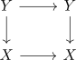

indiscrete topology on a category
Definition
Let $\mathcal{C}$ be a category. Then the indiscrete topology is the topology where only the maximal sieves, i.e. representables, are sieves
Proof
a)
observe that

is a pullback for trivial reasons (cf. square with parallel equivalences is bicartesian).
b)
Let $S \subseteq よ(X)$ be a sieve. Suppose that for all $f: Y \rightarrow X$, that the pullback
\begin{displaymath}
\begin{tikzcd}
f^*(S) \rar \dar & S \dar \\
よ(Y) \rar & よ(X)
\end{tikzcd}
\end{displaymath}is a covering sieve - in our case $f^*(S) \rightarrow Y$ is a natural isomorphism. Then we need to show that $S \rightarrow X$ is also a isomorphism.
Here it suffices to observe that
\begin{displaymath}
\begin{tikzcd}
よ(X) \rar \dar & R \arrow[hookrightarrow, ]{d}{} \dar \\
よ(X) \rar{\mathrm{id}} & よ(X)
\end{tikzcd}
\end{displaymath}commutes, which shows that $R \rightarrow よ(X)$ is not only a monomorphism but also an epimorphism. Furthermore, in category set and hence any presheaf category, only isomorphisms are both mono and epimorphisms at the same time.
c)
any maximal sieve is a covering sieve